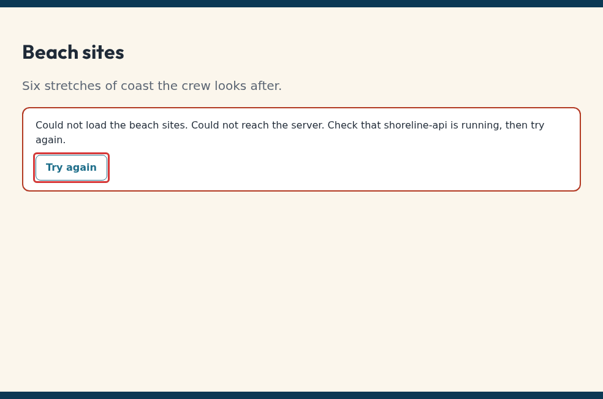

React + TypeScript · Part 2 · Session 11 of 26 · 3 hours
Session 11
Custom Hooks, Refs and the DOM
Write a Hook once, use it everywhere; and put the keyboard focus where people need it.
Today
Three hours, two lessons
| 0:00 | Warm-up: three questions on 4.1 |
| 0:10 | 4.2 Custom Hooks: model, demo, lab, project |
| 1:25 | Break (10 min) |
| 1:35 | 4.3 Refs and the DOM: model, demo, lab, project |
| 2:50 | Exit ticket, homework, what to bring |
LABS Lab files are in
labs/module-11. Work in starter/, never the solution.Warm-up · 6 minutes
Three questions on Lesson 4.1
- An effect reads siteId: what goes in the array, and who tells you?
- When does React call
() => controller.abort()? - Four pages, one dozen-line effect each: what happens to them today?
WHY Fingers up for A to D.
4.2
Custom Hooks
Write it once. Every crew follows the card, and keeps its own bag count.
4.2 · Mental model
The laminated checklist
- One card, written once: the custom Hook
- Every crew follows it: every component that calls it
- Each crew has its own radio and bag count: its own state
- Custom Hooks share logic, never state
RULE calls no Hooks → function · returns elements → component · calls Hooks, returns values → Hook
4.2 · Live demo
A Hook is a function named use…
import { useEffect, useState } from 'react' // A custom Hook: a function whose name starts with "use" and that calls other Hooks function useNow(intervalMs: number): Date { const [now, setNow] = useState(() => new Date()) useEffect(() => { const timer = setInterval(() => setNow(new Date()), intervalMs) return () => clearInterval(timer) }, [intervalMs]) return now }
WHY No registration, no import: the name is the whole contract.
4.2 · Live demo
A Hook the linter does not recognize
npm run lint
× react-hooks(rules-of-hooks): React Hook "useEffect" is called in function "setTabTitle" that is neither a React function component nor a custom React Hook function. React component names must start with an uppercase letter. React Hook names must start with the word "use". Found 0 warnings and 1 error.
WATCH An ERROR, and tsc is silent. Rename it useTabTitle.
4.2 · Live demo
The tuple trap
npx tsc -b
src/Scratch.tsx:12:48 - error TS2322: Type 'boolean | (() => void) | undefined' is not assignable to type 'MouseEventHandler<HTMLButtonElement> | undefined'. Found 1 error in src/Scratch.tsx:12
WHY An array literal is an array of unions.
return [on, toggle] as const: a readonly tuple.4.2 · Return shapes
What a Hook returns
- nothing (
void):useDocumentTitle(title) - one value:
useDebouncedValue(query, 300) - a tuple,
as const:const [open, toggle] = useToggle(false) - an object with an exported interface:
sites.state,sites.reload
4.2 · Live demo
The first try: load in the array
npx tsc -b && npm run lint
Found 0 warnings and 0 errors. Finished in …ms on 34 files with 150 rules using … threads.
WATCH Both quiet. The Network tab: more than 700 requests in two seconds.
4.2 · Why
A new function on every render
- Object.is never finds two functions equal
- render → new function → effect → answer → state → render…
- key: WHAT is loaded, and WHEN to load again
- load: HOW, read through
useEffectEvent
NEXT Lesson 7.1: TanStack Query's queryKey and queryFn are the same idea.
4.2 · The Hook
useApi(key, load)
shoreline-hq/src/hooks/useApi.ts
export function useApi<T>(key: string, load: (signal: AbortSignal) => Promise<T>): ApiResult<T> { const [state, setState] = useState<LoadState<T>>({ kind: 'loading' }) const [attempt, setAttempt] = useState(0) // The latest load function, without making the effect run again when it changes const loadLatest = useEffectEvent(load)
WHY The array is
[key, attempt]. reload = loading + one more attempt.4.2 · The linter guards it
loadLatest in the array
npm run lint
⚠ react-hooks(exhaustive-deps): Functions returned from `useEffectEvent` must not be included in the dependency array.
╭─[src/hooks/useApi.ts:32:21]
31 │ return () => controller.abort()
32 │ }, [key, attempt, loadLatest])
· ──────────
33 │
╰────
help: Remove the dependency from the dependency array.
WATCH Leave it out. Values that should reload go in the array.
4.2 · Generic Hooks
Waiting for the typing to stop
shoreline-hq/src/hooks/useDebouncedValue.ts
export function useDebouncedValue<T>(value: T, delay: number): T { const [settled, setSettled] = useState(value) useEffect(() => { const timer = setTimeout(() => setSettled(value), delay) return () => clearTimeout(timer) }, [value, delay]) return settled
MEASURED pelican: one request after the pause; with delay 0, seven (measured).
4.2 · Guided lab · 20 minutes
Three Hooks of your own
labs/module-11/l4_2-custom-hooks/starternpm install,npm test,npm run typecheck- Task 1: a tuple, typed (
as const) - Task 3: one request per key (the starter sends 22)
- Done:
Tests 6 passed (6)
MORE Finished? Task 2: a generic Hook with a timer.
4.2 · Project · Steps 1 to 4
Every page gets Try again

10
Break
Back at 1:35. Then: refs and the DOM.
4.3
Refs and the DOM
The whiteboard and the pocket notebook.
4.3 · Mental model
State or ref?
- State: the whiteboard
- the setter renders again
- read it while rendering
- anything the screen shows
- Ref: the pocket notebook
- assign
.current; nothing renders - never read it while rendering
- timer ids, elements, the opener
RULE If the screen should change when it changes, it is state.
4.3 · Live demo
A ref to an element, and its null
npx tsc -b
src/Scratch.tsx:7:5 - error TS18047: 'noteRef.current' is possibly 'null'. Found 1 error in src/Scratch.tsx:7
WHY
noteRef.current?.focus(): there is no element before the first render.4.3 · Live demo
A callback ref's cleanup
src/Scratch.tsx:18:11 - error TS2322: Type '(el: HTMLButtonElement | null) => () => boolean' is not assignable to type 'Ref<HTMLButtonElement> | undefined'.
Type '(el: HTMLButtonElement | null) => () => boolean' is not assignable to type '(instance: HTMLButtonElement | null) => void | (() => VoidOrUndefinedOnly)'.
Type '() => boolean' is not assignable to type 'void | (() => VoidOrUndefinedOnly)'.
Type '() => boolean' is not assignable to type '() => VoidOrUndefinedOnly'.
Type 'boolean' is not assignable to type 'VoidOrUndefinedOnly'.
WATCH A ref cleanup must return nothing. Braces.
4.3 · React 19
ref is an ordinary prop
shoreline-hq/src/components/EventFilters.tsx
interface EventFiltersProps { query: string status: StatusFilter onQueryChange: (query: string) => void onStatusChange: (status: StatusFilter) => void onClear: () => void /** Points at the search box, so the page can move the focus there */ ref?: Ref<HTMLInputElement> }
WHY No forwardRef. The component decides which element a parent reaches.
4.3 · Focus management
Where does the focus go?
| gone | The focused element disappears → the nearest useful thing |
| errors | A form finds problems → the first field to fix |
| open | A dialog opens → inside it, the safe answer |
| close | A dialog closes → back to its opener |
MEASURED Without a decision: the page's body, then the skip link.
4.3 · The / shortcut
A document listener in an effect
shoreline-hq/src/pages/EventsPage.tsx
// Press / anywhere on the page (except in a field) to jump to the search box useEffect(() => { function handleKeyDown(event: KeyboardEvent) { if (event.key !== '/' || event.ctrlKey || event.metaKey || event.altKey) return if (isTyping(event.target)) return event.preventDefault() // or the / would be typed into the search box searchRef.current?.focus() } document.addEventListener('keydown', handleKeyDown) return () => document.removeEventListener('keydown', handleKeyDown) }, [])
WHY The browser's KeyboardEvent, not React's (TS2769 otherwise).
4.3 · Portals and dialogs
Cancel this cleanup?

4.3 · Guided lab · 20 minutes
Refs to elements
labs/module-11/l4_3-refs-and-the-dom/starter- Task 1: focus and select the check-in code
- Task 2:
ref?: Ref<HTMLInputElement>; Clear keeps the focus - Done:
Tests 4 passed (4)
MORE Finished? Task 3: callback refs in a Map.
4.3 · Project · Steps 1 and 3
The first field to fix

4.3 · Project
In the room, and at home
- Room: Step 1 (EventFilters takes a ref), Step 3 (first invalid field), Step 4 started
- Home: 4.2 Steps 5 and 6 FIRST, then 4.3 Step 2 (the / shortcut)
- Home: Dialog, ConfirmDialog, Cancel cleanup, the keyboard pass
- Lint at the end: Found 0 warnings and 0 errors.
Wrap-up · 4 minutes
Exit ticket
- Two pages call
useApi('/sites', getSites): how many requests, shared? - useApi: what does the key decide, and why is load not in the array?
- One value for a ref, one for state, from today's code
WHY No notes.
Before Session 12
Homework and bring list
- 4.2: Steps 5 and 6, exercises, quiz, journal
- 4.3: Step 2, Steps 4 to 6, exercises, quiz, journal
- Labs: 4.2 Task 2, 4.3 Task 3
- Bring: Lesson 4.3 finished (or
lesson-16-start)
NEXT Session 12: Suspense and Error Boundaries, and useReducer.